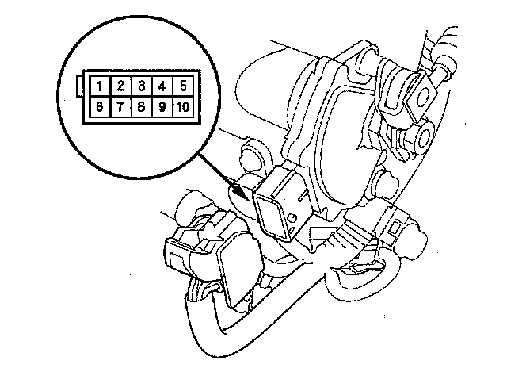
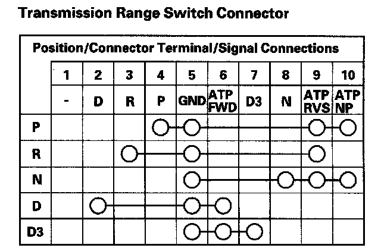

Transmission Range Switch Test
Transmission Range Switch Test1. Make sure you have the anti-theft codes for the audio system and the navigation system (if equipped).
2. Disconnect the negative terminal from the battery, then disconnect the positive terminal.
3. Remove the battery hold-down bracket, and remove the battery cover, battery, and battery tray.
4. Remove the under-hood subfuse box from its bracket, and remove the bracket from the battery base.
5. Remove the intake air duct and air cleaner housing.
6. Remove the battery base and battery base bracket.
7. Disconnect the transmission range switch connector.

8. Check for continuity between terminals at the switch connector. There should be continuity between the terminals in the following table for each switch position.

9. Transmission range switch test has finished if the test results are OK.
If there is no continuity between any terminals, check that the transmission range switch installation. If the switch installation is OK, replace the switch.